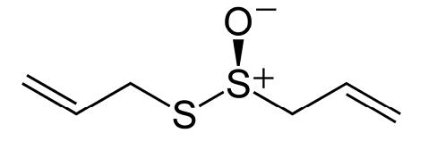
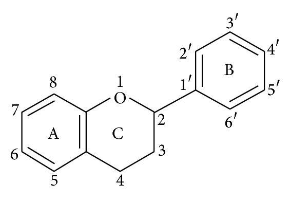
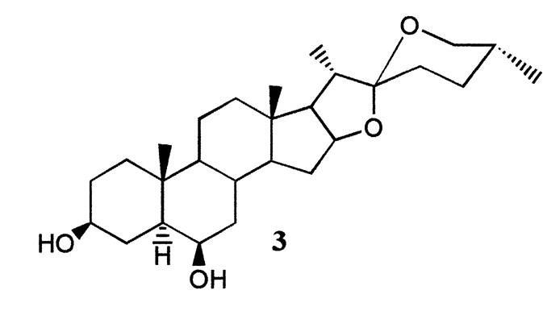

Pengayaan
Pengayaan
Bawang Putih (Allium saitvum)
Siapa yang belum kenal dengan bawang putih? bawang putih ini pastinya sering kalian semua lihat apalagi yang suka memasak. Karena tak jarang bawang putih dijadikan sebagai bahan utama untuk bumbu masakan. Bawang putih merupakan tanaman asli Asia tengah, seperti Jepang dan Cina yang mempunyai iklim subtropik. Bawang putih selain biasa dimanfaatkan sebagai bumbu dapur atau penyedap makanan yang dapat menurunkan kolestrol yang terkandung dalam bahan makanan yang akan diolah, ternyata sudah sejak lama digunakan sebagai tanaman herbal dari berbagai macam penyakit.
Karakteristik dari bawang putih antara lain merupakan tanaman terna (herbaceous) yang tumbuh secara berumpun dengan tinggi sekitar 30-75 cm, mempunyai akar serabut kecil dan banyak, batangnya berupa batang semu yang terbentuk dari pelepah daun. Mempunyai helaian daun seperti pita, pipih dan memanjang. Kelopak daun kuat, tipis dan membentuk kelopak daun yang lebih muda. Setiap umbi bawang putih terdiri dari sejumlah siung atau anak bawang dengan setiap siungnya terbungkus oleh kulit putih yang tipis.
Gambar 16. Helaian daun bawang putih (A) dan umbi bawang putih yang mempunyai 9 siung atau anak bawang (B)
(Sumber: Koleksi pribadi)
Telah dikatakan sebelumnya kalau bawang putih dapat digunakan sebagai obat dari berbagai macam penyakit, bukan.. lalu penyakit apa saja yang dapat diobati dengan menggunakan bawang putih? Adapun penyakit yang biasanya diobati dengan menggunakan bawang putih antara lain: obat pencegahan kanker, antiradang, antibakteri, mencegah penyakit flu, menyembuhkan penyakit kulit, meredakan nyeri, mengatasi diabetes, mengobati diare, disentri dan gangguan penyakit pencernaan yang lainnya, mengobati jerawat dan penyakit kulit lainnya yang disebabkan oleh jamur, sebagai pertolongan pertama keracunan merkuri, menyembuhkan sariawan, dan melancarkan peredaran darah.
Pembahasan utama yang ditinjau disini adalah kandungan yang dimiliki oleh bawang putih sehingga dapat dijadikan sebagai obat berbagai macam penyakit yang disebabkan oleh bakteri. Kemampuan bawang putih sebagai antibakteri ini pertama kali ditemukan oleh Louis Pasteur dari jus bawang putih yang digunakan sebagai obat. sebenarnya kandungan apa yang ada dalam bawang putih sehingga dapat dijadikan sebagai antibakteri? Berikut penjelasannya.
- Allicin
Allicin merupakan senyawa sulfur yang reaktif dan cenderung tidak stabil yang mempunyai kemampuan untuk melawan katalisator biologis (enzim) khususnya yang berada di dalam atau di bawah lapisan bakteri yang dibutuhkan untuk mertumbuhan dan reproduksi bakteri. Struktur kimia Allicin dapat dilihat pada Gambar 17.
Gambar 17. Struktur kimia Allicin (Sumber: White, 2008 )
Cara kerja Allicin dalam menghambat pertumbuhan bakteri ialah dengan cara menghambat secara total sintesis RNA bakteri. Walaupun sintesis DNA dan protein juga mengalami penghambatan sebagian oleh Allicin, nampaknya RNA bakteri merupakan target utama Allicin. Karena Allicin merupakan senyawa yang bersifat tidak stabil, maka senyawa ini dalam waktu beberapa jam akan kembali dimetabolisme menjadi senyawa sulfur lain seperti vinyldithiines dan Diallyl disulfide (Ajoene) yang juga memiliki daya antibakteri berspektrum luas, namun dengan aktivitas yang lebih kecil.
- Flavonoid
Flavonoid adalah salah satu kelompok senyawa metabolit sekunder yang paling banyak ditemukan di dalam jaringan tumbuhan. Flavonoid termasuk dalam golongan senyawa phenolik dengan struktur kimia C6-C3-C6. Kerangka flavonoid terdiri atas satu cincin aromatic A, satu cincin aromatic B, dan cincin tengah berupa heterosiklik yang mengandung oksigen dan bentuk teroksidasi cincin ini dijadikan dasar pembagian flavonoid ke dalam sub-sub kelompoknya. Sedangkan sistem penomoran berfungsi untuk membedakan posisi karbon di sekitar molekulnya (Gambar 18).
Gambar 18. Struktur kimia Flavonoid (Sumber: Kumar and Pandey, 2013)
Flavonoid mempunyai aktifitas antioksidan alami yang terdapat pada sereal, sayur-sayuran dan buah. Peran flavonoid sebagai antioksidan adalah dengan cara mendonasikan atom hidrogennya atau melalui kemampuannya mengkelet logam berada dalam bentuk glukosida atau dalam bentuk bebas yang disebut aglikon.
- Saponin
Saponin merupakaan senyawa glikosida kompleks dengan berat molekul tinggi yang dihasilkan terutama oleh tanaman, hewan laut tingkat rendah dan beberapa bakteri. Istilah saponin diturunkan dari bahasa Latin ‘SAPO’ yang berarti sabun, diambil dari kata "Saponaria vaccaria", suatu tanaman yang mengandung saponin digunakan sebagai sabun untuk mencuci. Saponin larut dalam air tetapi tidak larut dalam eter.
Saponin merupakan senyawa metabolit sekunder yang dihasilkan spesies tanaman yang berbeda, terutama tanaman dikotil dan berperan sebagai bagian dari sistem pertahanan tanaman dan termasuk kedalam kelompok besar molekul pelindung tanaman yang disebut Phytoanticipins atau Phytoprotectans. Ada dua tipe saponin, yaitu saponin steroida dan saponin triterpenoida. Keduanya dibedakan atas struktur aglikonnya. Matsuura (2001) mengidentifikasi saponin yang ada di bawang putih termasuk ke dalam saponin tipe steroida (Gambar 19).
Gambar 19. Struktur kimia saponin steroida (Sumber: Matsuura, 2001)
Pertanyaan tersebut sangat penuh akan keraguan. Lalu bagaimana cara membuktikannya? Salah satu cara yang dapat digunakan untuk membuktikan bahwa bawang putih merupakan salah satu tanaman yang mengandung antibakteri adalah dengan melakukan uji antimikroba. Banyak uji antimikroba yang dapat dilakukan, salah satunya adala dengan metode dilusi.
Metode dilusi merupakan metode dalam uji antimikroba dimana senyawa antimikroba yang diuji dimasukkan ke dalam mediumnya terlebih dahulu, dan diinokulasi dengan bakteri uji. Keuntungan dari metode dilusi antara lain dapat mengetahui senyawa antimikroba yang dibutuhkan untuk membunuh mikroba dengan jelas, dalam artian metode ini tidak hanya dapat digunakan untuk menguji jumlah senyawa antimikroba yang dapat menghambat pertumbuhan mikroba tapi juga yang dapat membunuh pertumbuhan mikroba. Sedangkan kelemahan dari metode dilusi adalah karena metode dilusi membutuhkan waktu yang lama dengan serangkaian kegiatan yang banyak. Secara garis besar, tahapan dari uji antimikroba metode dilusi dapat dilihat pada Gambar 20. berikut.
Gambar 20. Rangkaian uji antimikroba dengan metode dilusi
Uji antimikroba ekstrak bawang putih terhadap bakteri Shigella dysenteriae dan Staphylococcus aureus dilakukan dengan metode dilusi dengan menggunakan konsentrasi 1000, 500, 250, 125, dan 62,5 μg/ml. Kontrol positif yang digunakan adalah kloramfenikol 400 μg/ml, penisilin 400 μg/ml dan tetrasiklin 300 μg/ml. Alasan menggunakan ketiga kontrol positif tersebut adalah karena ketiganya merupakan antibiotik dasar yang umumnya diberikan kepada pasien. Sedangkan kontrol negatif hanya berisi medium dan bakteri saja. Dalam metode dilusi ini yang dapat ditentukan adalah Konsentrasi Hambat Minimum (KHM) dan Konsentrasi Bunuh Minimum (KBM).
Parameter yang digunakan untuk menentukan Konsentrasi HambatMinimum (KHM) pada pengujian antimikroba dengan metode dilusi adalah dengan melihat kekeruhan dan kejernihan dari setiap perlakuan yang telah diinkubasi selama 24 jam pada suhu 37oC. Nilai KHM ditentukan dengan mengamati kadar terkecil yang masih jernih yang dapat mengindikasikan tidak adanya pertumbuhan bakteri. Hasil yang diperoleh setelah melakukan uji antimikroba ini diketahui bahwa KHM dari pengujian ekstrak bawang putih terhadap bakteri Shigella dysenteriae adalah 125 μg/ml (Gambar 21) sedangkan KHM dari pengujian ekstrak bawang putih terhadap bakteri Staphylococcus aureus adalah 500 μg/ml (Gambar 22).
Gambar 21. Hasil uji antimikroba ekstrak bawang putih terhadap bakteri Shigella dysenteriae dengan metode dilusi. Terlihat bahwa larutan berisi campuran konsentrasi ekstrak dengan bakteri uji yang terakhir terlihat jernih adalah pada konsentrasi 125 μg/ml, sehingga konsentrasi 125 μg/ml itulah yang ditetapkan sebagai KHM
Gambar 22. Hasil uji antimikroba ekstrak bawang putih terhadap bakteri Staphylococcus aureus dengan metode dilusi. Terlihat bahwa larutan berisi campuran konsentrasi ekstrak dengan bakteri uji yang terakhir terlihat jernih adalah pada konsentrasi 500 μg/ml, sehingga konsentrasi 500 μg/ml itulah yang ditetapkan sebagai KHM
Setelah mengetahui KHM dari setiap bakteri uji, maka kemudian bisa ditentukan dengan cara penanaman hasil perlakuan di medium cair ke medium MHA di cawan, kemudian dihitung koloni bakteri yang terlihat dan jumlahnya dibandingkan dengan jumlah bakteri awal pada control negatif. Bakteri dengan jumlah kurang dari 0,1% dari jumlah bakteri awal ditentukan sebagai KBM. Perhitungan jumlah koloni bakteri Shigella dysenteriae dari setiap perlakuan yang dilakukan dapat dilihat pada Tabel 1, sedangankan perhitungan jumlah koloni bakteri Staphylococcus aureus dari setiap perlakuan yang dilakukan dapat dilihat pada Tabel 2. berikut
Tabel 1. Hasil perhitungan jumlah koloni bakteri Shigella dysenteriae pada setiap perlakuan
| Perlakuan | Jumlah Bakteri | Rata-rata | ||
|---|---|---|---|---|
| Ulangan I | Ulangan II | Ulangan III | ||
| Ekstrak 1000 μg/ml | 184 | 126 | 78 | 129 |
| Ekstrak 500 μg/ml | 241 | 232 | 216 | 229 |
| Ekstrak 250 μg/ml | 466 | 396 | 344 | 402 |
| Ekstrak 125 μg/ml | 505 | 488 | 505 | 499 |
| Ekstrak 62,5 μg/ml | 541 | 537 | 505 | 527 |
| K+ kloramfenikol 400 μg/ml | 964 | 745 | 714 | 807 |
| K+ Tetrasiklin 300 μg/ml | 1 | 1 | 1 | 1 |
| K+ Penisilin 400 μg/ml | 19 | 11 | 5 | 11 |
| K- (Jumlah bakteri awal) | 4470 | 4410 | 4210 | 4363 |
Tabel 2. Hasil perhitungan jumlah koloni bakteri Stapylococcus aureus pada setiap perlakuan
| Perlakuan | Jumlah Bakteri | Rata-rata | ||
|---|---|---|---|---|
| Ulangan I | Ulangan II | Ulangan III | ||
| Ekstrak 1000 μg/ml | 341 | 271 | 246 | 288 |
| Ekstrak 500 μg/ml | 481 | 439 | 417 | 446 |
| Ekstrak 250 μg/ml | 1256 | 1141 | 981 | 1126 |
| Ekstrak 125 μg/ml | 1312 | 1301 | 1294 | 1302 |
| Ekstrak 62,5 μg/ml | 1551 | 1540 | 1417 | 1503 |
| K+ kloramfenikol 400 μg/ml | 1761 | 1684 | 682 | 1363 |
| K+ Tetrasiklin 300 μg/ml | 1141 | 964 | 916 | 1007 |
| K+ Penisilin 400 μg/ml | 342 | 266 | 249 | 286 |
| K- (Jumlah bakteri awal) | 4960 | 4340 | 4270 | 4523 |
Tabel 1. Menunjukkan hasil dari setiap perlakuan uji antimikroba ekstrak bawang putih terhadap bakteri Shigella dysenteriae setelah perlakuan dalam medium cair. Penentuan KBM dari uji ini adalah konsentrasi dimana jumlah bakteri yang terhitung kurang dari 0,1% jumlah bakteri control negatif. Diketahui bahwa jumlah koloni bakteri dalam control negatif perlakuan dengan menggunakan bakteri Shigella dysenteriae adalah 4363, sehingga yang ditetapkan sebagai KBM adalah konsentrasi dimana jumlah koloni bakteri kurang dari 436,3. Dari penjumlahan tersebut, maka yang dinyatakan sebagai KBM adalah konsentrasi ekstrak bawang putih sebesar 25% karena jumlah koloni bakteri pada konsentrasi 25% (402<436.3). Gambar koloni bakteri yang terbentuk dari setiap perlakuan yang ditanam di cawan dengan menggunakan medium MHA dapat dilihat pada Gambar 23. berikut
Tabel 2. Menunjukkan hasil dari setiap perlakuan uji antimikroba ekstrak bawang putih terhadap bakteri Staphylococcus aureus setelah dilakukannya perlakuan pada medium cair. KBM yang ditemukan dalam perlakuan tersebut adalah pada konsentrasi ekstrak 50% karena jumlah koloni bakteri pada konsentrasi 50% sebanyak 446. Jumlah tersebut lebih kecil 0,1% dari bakteri control negatif yang dihitung sebagai jumlah koloni awal bakteri Staphylococcus aureus yang berjumlah 4523 (446<452.3). Gambar koloni bakteri dalam cawan pada setiap perlakuan disajikan dalam Gambar 24 berikut.
Perbedaan jumlah koloni yang terbentuk antar setiap konsentrasi ekstrak bawang putih yang diberikan membuktikan bahwa ekstrak bawang putih teruji mengandung senyawa antibakteri sehingga dapat menghambat pertumbuhan bakteri. Telah disebutkan sebelumnya bahwa senyawa antibakteri yang terkadung dalam bawang putih antara lain allicin, flavonoid dan saponin (Singh and Singh, 2008; White and Zellner, 2008; Untari, 2010)
Allicin merupakan salah satu komponen biologis yang paling aktif terkandung dalam bawang putih. Allicin dan komponen lainnya inilah yang memberi bau yang khas pada bawang putih. Allicin terbentuk ketika bawang putih dihancurkan. Bawang putih yang dihancurkan akan mengaktifkan enzim Allinase yang akan memetabolisme alliin menjadi allicin, yang kemudian akan dimetabolisme menjadi vinyldithiines dan Ajoene (Londhe, 2011). Mekanisme kerja allicin untuk menghambat pertumbuhan bakteri adalah dengan cara menghambat secara total sintesis RNA bakteri dan juga menghambat sintesis DNA dan protein (Deresse, 2010). Untuk mekanisme lebih lanjut kenapa allicin dapat menghabat sintesis RNA, DNA dan protein masih belum ada penelitian lebih lanjut sehingga hipotesis sementara menyatakan bahwa senyawa allicin mampu berikatan dengan rantai asam amino dalam proses sintesis protein yang terjadi yang dapat menyebabkan terhambatnya sintesis baik itu sintesis RNA, DNA atau protein (Borlinghous, et al. 2014).
Flavonoid juga merupakan salah satu senyawa yang terkandung dalam bawang putih yang merupakan senyawa antibakteri. Mekanisme kerja flavonoid dalam menghambat pertumbuhan bakteri dengan cara menghambat sintesis dinding sel, menghambat sintesis asam nukleat, menghambat fungsi membran sel dan menghambat metabolisme energi (Chusnie, 2005). Senyawa flavonoid dapat menghambat sintesis dinding sel karena senyawa flavonoid dapat menyebabkan tekanan osmotik dalam sel bakteri lebih tinggi dari pada di luar sel bakteri sehingga mengakibatkan terjadinya kebocoran plasma dan akhirnya menyebabkan terjadinya lisis pada sel bakteri dan menyebabkan kematian sel bakteri (Effinora, 1990 dalam Majid, 2009).
Mekanisme antibakteri flavonoid dalam menghambat sintesis asam nukleat adalah melalui cincin A dan cincin B yang memegang peran penting dalam proses interkelasi atau ikatan hidrogen dengan menumpuk basa pada asam nukleat yang menghambat pembentukan DNA dan RNA. Hal tersebut dapat menyebabkan terjadinya kerusakan permeabilitas dinding sel bakteri dan lisosom (Chusnie, 2005). Mekanisme antibakteri flavonoid dengan cara menghambat fungsi membran sel yaitu dengan membentuk senyawa kompleks dengan protein ekstraseluler sehingga dapat merusak membran sel dan diikuti dengan keluarnya senyawa intraseluler (Chusnie, 2005). Mekanisme antibakteri flavonoid dengan cara menghambat metabolism energi yaitu dengan menghambat penggunaan oksigen oleh bakteri. flavonoid menghambat sitokrom C reduktase sehingga proses metabolisme dan biosintesis makromolekul terhambat (Chusnie, 2005).
Saponin juga termasuk senyawa antibakteri yang terkandung dalam bawang putih. mekanisme kerja saponin dalam menghambat bakteri dengan cara membentuk senyawa kompleks dengan membrane sel bakteri melalui ikatan hydrogen, sehingga dapat menghancurkan sifat permeabilitas dinding sel bakteri dan menimbulkan kematian sel bakteri (Noer dan Nurhayati, 2006). Saponin dapat menjadi senyawa antibakteri karena zat aktif pada permukaannya mirip dengan detergen, sehingga saponin akan mudah menurunkan tegangan permukaan dinding sel bakteri dan merusak permeabilitas membrane. Rusaknya membrane sel akan dapat mengganggu kelangsungan hidup dari bakteri yang bersangkutan (Harbone, 1996). Pendapat yang lain juga diberikan oleh Cavalieri (2005) yang menyatakan bahwa saponin berdifusi melalui membrane sel yang rentan kemudian mengikat sitoplasma sehingga mengganggu dan mengurangi kestabilan membrane sel. Hal tersebut menyebabkan sitoplasma bocor dan keluar dari sel yang mengakibatkan kematian sel. Ketiga pendapat tersebut secara garis besar menyatakan bahwa penghambatan saponin terhadap pertumbuhan bakteri disebabkan oleh kemampuannya dalam merusak membran sel dari bakteri.
Jika dilihat lebih lanjut, akan ditemukan adanya perbedaan aktivitas antimikroba dari ekstrak bawang putih terhadap bakteri Shigella dysenteriae dan bakteri Staphylococcus aureus. Penghambatan lebih besar pada bakteri Shigella dysenteriae dibuktikan dengan ditemukannya KBM pada konsentrasi ekstrak bawang putih sebesar 25%. Sedangkan KBM ekstrak bawang putih terhadap bakteri Staphylococcus aureus berada pada konsentrasi 50%. Shigella dysenteriae merupakan bakteri gram negatif, sedangkan Staphylococcus aureus termasuk bakteri gram positif. Bakteri gram negatif memiliki dinding sel dan kandungan lipid yang tinggi, struktur dindingnya berupa multilayer atau berlapis tiga yang terdiri atas lipoprotein, membrane luar fosfolipid dan lipopolisakarida (Pelczar, 2008; Silhavy, et al. 2010), sedangkan bakteri gram positif hanya memiliki lapisan peptidoglikan pada bagian luarnya.
Berdasarkan struktur dari kedua dinding sel bakteri tersebut maka sangat memungkinkan apabila bakteri gram negatif akan lebih resisten terhadap antibakteri yang diberikan dikarenakan struktur membran luar dari bakteri gram negatif yang lebih kompleks daripada struktur membran luar bakteri gram posisitif (Sanaz, 1999). Adanya struktur membran luar yang kompleks dari bakteri gram negatif akan membatasi akses senyawa aktif dari ekstrak yang bersifat antibakteri untuk menghancurkan membran sel bakteri, sehingga tingkat resistensi dari bakteri gram negatif lebih tinggi daripada bakteri gram posistif (Geidam, et al. 2007).
Selain melihat penghambatan dari ekstrak bawang putih terhadap bakteri Shigella dysenteriae dan Staphylococcus aureus, pada penelitian ini juga dapat melihat bagaimana efektivitas beberapa antibiotik yang umum ditemukan di pasaran, yaitu kloramfenikol, penisilin dan tetrasiklin. Dari hasil penelitian menunjukkan bahwa bakteri Shigella dysenteriae resisten terhadap kloramfenikol daripada terhadap penisilin dan tetrasiklin. Dibuktikan dengan adanya jumlah koloni yang masih banyak pada perlakuan menggunakan kloramfenikol, sedangkan perlakuan dengan menggunakan penisilin dan tetrasiklin hanya didapatkan 1-15 koloni bakteri. Kemampuan resistensi dari bakteri Shigella dysenteriae terhadap kloramfenikol disebakan karena adanya enzim yang menginaktivasi kloramfenikol dengan mengkatalisis proses asilasi terhadap gugus hidroksi dalam kloramfenikol yang menggunakan donor gugus etil berupa asetil koenzim A. Akibatnya dihasilkan derivate asetoksi kloramfenikol yang tidak mampu berikatan dengan ribosom bakteri.
Efektivitas antibiotik kloramfenikol, penisilin, dan tetrasiklin pada bakteri Staphylococcus aeureus mendapatkan hasil bahwa ketiga antibiotic tersebut masih tidak dapat menghambat bakteri S. aureus secara efektif. Dibuktikan dengan masih banyaknya jumlah koloni bakteri yang ditemukan pada setiap perlakuan menggunakan ketiga antibiotik yang disebutkan di atas. Resistensi bakteri S. aureus terhadap tetrasiklin dapat terjadi karena adanya perubahan permeabilitas dari dinding sel bakteri. Tetrasiklin tidak diangkut ke dalam secara aktif sehingga tidak akan mudah mencapai konsentrasi yang dapat menghambat pertumbuhan dari sel bakteri itu sendiri (Jawetz, et al. 2015). Resistensi bakteri S. aureus terhadap penisilin dimediasi oleh blaZ. blaZ merupakan gen yang mengkode enzim yang disintesis kerika S. aureus diberikan antibiotic yang termasuk β-laktam. Enzim ini mampu menghidrolisis cincin β-laktam yang menyebabkan terjadinya inaktivasi β-laktam (Sulistyaningsih, 2010).
Resistensi bakteri Sgiella dysenteriae terhadap kloramfenikol juga sebelumnya telah ditemukan oleh Iswadi (2012). Sedangkan resistensi bakteri Staphyloccus aureus terhadap kloramfenikol, tetrasiklin dan penisilin sebelumnya juga telah ditemukan oleh Gordon & Lowy (2008) dan Jawetz, et al. (2015). Adanya resistensi bakteri terhadap antibiotik sebaiknya membuka mata kita semua untuk mencari alternatif dari bahan alami yang banyak tersedia di sekitar kita sebagai pengganti antibiotik dalam mengobati berbagai macam penyakit. Disini hanya ditemukan adanya tiga antibiotik yang resisten terhadap bakteri Shigella dysenteriae penyebab penyakit disentri dan bakteri Staphylococcus aureus penyebab penyakit kulit. Maka tidak ada yang tidak mungkin bahwa antibiotic tersebut resisten terhadap bakteri lainnya yang menyebabkan berbagai macam penyakit. Selain dipermasalahkan oleh tingkat resistensi, adanya efek samping setelah mengkonsumsi antibiotik tertentu yang mungkin akan dapat membahayakan diri juga menjadi alasan kenapa harus segera move on terhdadap antibiotik kimia yang banyak terjual di pasaran. Oleh karena itu, segera cari tahu berbagai macam bahan alam yang mempunyai senyawa antibakteri yang dapat digunakan sebagai pegganti obat kimia atau antibiotik yang biasanya kita konsumsi. Karena kalau bukan kita yang memulai, maka siapa lagi!